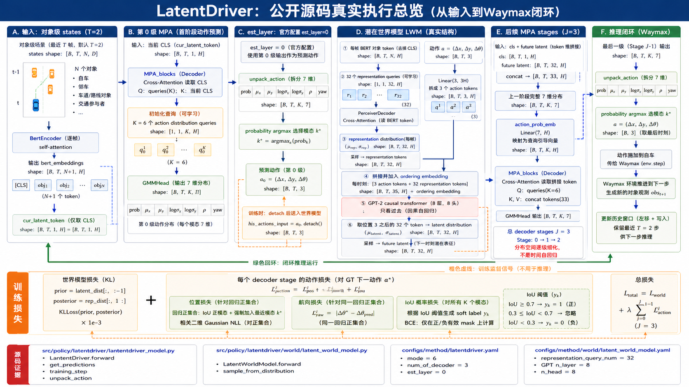
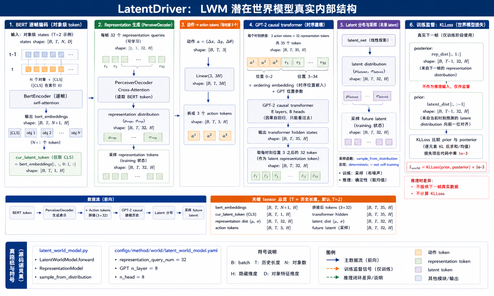
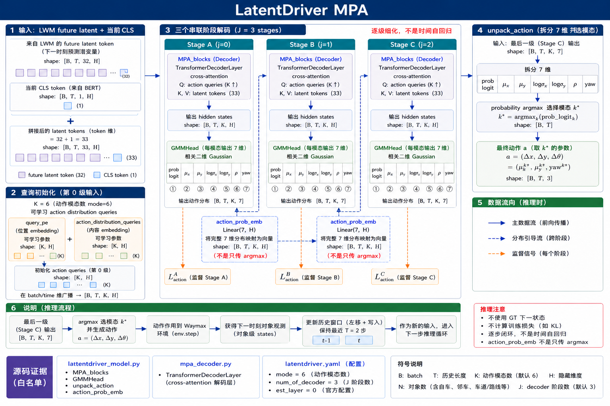
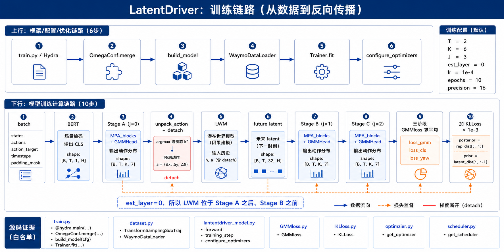
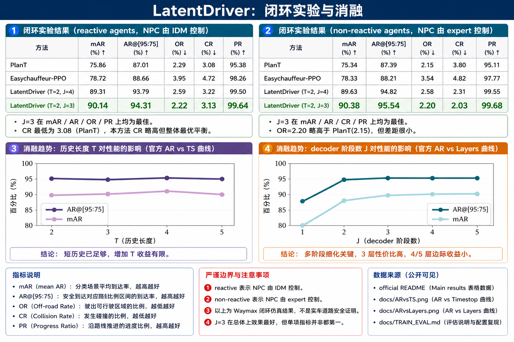

摘要与阅读结论
LatentDriver 研究一个很具体但很难的问题：在没有驾驶意图、导航指令或任务专属标签的情况下，能否只凭对象级交通场景历史，学习一个可以在闭环仿真中执行的生成式驾驶策略。它的答案不是把未来轨迹做成单峰回归，而是把驾驶拆成两个互补的生成问题：潜在世界模型先预测“下一时刻可能处于什么状态”，多阶段多模态策略再在这些未来表征上搜索可执行动作。
本文最值得抓住的机制有三条。第一，世界模型不直接生成像素，而是在 BERT 场景表征上学习未来 latent 分布。第二，MPA 的多模态查询不是一次性并列输出后再挑一个，而是将上一阶段完整的七维动作分布嵌入后继续搜索。第三，源码把第 0 个 decoder 阶段的动作作为 world-model 条件，因此真实执行顺序是 Stage A → LWM → Stage B → Stage C，而不是“先完整世界模型、再一次性策略头”。
精读还必须区分论文叙述与公开实现：论文/图示常用 GMM 或概率分布的抽象描述，而 GMMloss.py 的位置头落地为带相关系数 rho 的二维 Gaussian NLL；代码输出的五维位置参数是 μx、μy、logσx、logσy、ρ，另有 probability logit 与 yaw，共七维。本文以可复现源码为实现事实，以论文为设计动机，并明确标出两者的边界。

全部细节
图1从左到右按真实 forward 顺序展开。A区的 states 是对象级张量 [B,T,N,D]；BERT 保留 N+1 个 token，但主策略先取 CLS。B区的 Stage A 使用 K=6 个查询并输出七维分布。C区突出 est_layer=0：第0级动作被解包，训练时 detach 后成为 LWM 条件。D区把每帧32个 representation token 与3个 action token拼为35个 GPT token。E区显示 future latent 与 CLS 拼接、完整七维分布经 Linear(7,H) 引导后续阶段。F区才是环境时间推进。底部损失带区分 stage 动作监督与 KL；阅读时不能把橙色训练支路解释成推理输入。
颜色合同保持一致：深蓝实线为前向数据流，橙色虚线为训练监督，绿色为环境闭环，红色用于边界或梯度截断。图中文字只把仓库实际模块、配置和指标画入正式资产；与论文抽象叙述不同的实现选择，以源码为准并在正文解释。
1. 问题设定：为什么需要 latent 与多模态
交通场景的未来不是确定函数。相同的当前状态可能对应保持车道、变道、减速或让行等不同可行演化；而闭环部署还会把前一步的小误差重新写回下一步观测。单纯用均方误差压到一条平均轨迹，会把互相排斥的模式揉成不可执行的中间答案。LatentDriver 的策略是在连续动作空间保留 K=6 个候选分布，同时让世界模型提供一个显式的未来状态条件。
动作在代码中是三维连续量 a=(Δx, Δy, Δθ)。这里 Δx 是前向位移，Δy 是横向位移，Δθ 是航向变化。仓库配置把动态动作类型设为 waypoint，动作范围写在 latentdriver.yaml 中；这意味着模型预测的是连续控制量，而不是离散驾驶意图类别。
2. 对象级编码与数据采样：输入不是图像
2.1 子轨迹与 shift-one 标签
原始 episode 的最大长度常量为80。WaymoDataLoader 生成起点 0、max_len、2×max_len 等不重叠样本；TransformSamplingSubTraj 同时返回当前动作 aa 与下一动作 aa_gt。aa_gt_normal 虽被计算并放入 batch，但当前 training_step 的 GMMloss 使用 action_target 原值，并没有直接以 aa_gt_normal 替代监督。这个区别对于复现动作范围和归一化非常重要。
2.2 padding、ordering 与因果可见性
padding_mask 只处理时间步是否真实；对象内部 token 的可见性由 BERT 自注意力处理。LWM 再把时间 mask 按每时刻35个 token 展开。ordering embedding 来自 timesteps，对超过 MAX_EPISODE_LEN 的位置做截断。因而 padding mask、causal mask、对象 token mask 是不同层级的约束，不能合并成一个概念。
WaymoDataLoader 从预处理场景文件读取轨迹，并按 max_len 切成不重叠子轨迹。默认 max_len=2，因此训练样本使用两个相邻时刻；action_target 是向前 shift-one 的下一动作。TransformSamplingSubTraj.__call__ 还生成 timesteps、ordering 和 padding_mask：不足窗口长度时左侧补零，真实时间步标记为 1，补齐部分标记为 0。
每个时刻的 states 形状可写成 [B,T,N,D]：B 是 batch，T 是历史长度，N 是对象数，D 是对象特征维度。BertEncoder 在对象 token 前加一个可学习 CLS token，并用对象属性、类型和位置相关嵌入形成序列；return_full_length=True 时保留 CLS 与对象 token，后续 LantentDriver.forward 只取 bert_embeddings[:,:,0:1,:] 作为 cur_latent_token。
一个容易误解的点是 T=2 不代表只预测两步未来。它表示一次前向使用的历史窗口长度；模型仍然预测下一时刻 latent 和动作，执行后把新观测写回窗口，再循环。另一个容易误解的点是路线对象并没有被单独变成规划标签，而是作为对象级 token 与车辆等共同进入编码器。
3. LWM：把下一状态变成可采样的潜变量
3.1 representation posterior 如何产生
RepresentationModel 用两条线性支路输出均值与 softplus 后的标准差；PerceiverDecoder 的查询数由 representation_query_num=32 决定。它不是把32个槽绑定到固定物理对象，而是学习一组可以压缩整帧对象 token 的潜在槽。训练中从该分布采样会迫使后续 GPT 适应表征不确定性。
3.2 GPT prior 与 posterior 的时间对齐
GPT 的输入不是自然语言 token id，而是 inputs_embeds。每时刻35个 token 经过 LayerNorm 后进入 causal transformer，输出仍按 [B,T,35,H] 重排。前三个位置对应动作，后三十二个位置被 latent_net 映射成 prior 分布。KLLoss 对齐 t 的 prior 与 t+1 的 posterior，构成真正的下一状态预测。
latent_world_model.py 的 forward 不是简单把 h_t 送进 GPT。第一步，representation queries（配置为 32）通过 PerceiverDecoder cross-attention 读取每帧完整 BERT token，得到 representation distribution 的 μ_rep 和 σ_rep，并在训练状态下采样 representation token。第二步，动作经过 Linear(3,3H) 展开成三个 action tokens；它们与 32 个 representation tokens 拼接成每时刻 35 个 token，加入 ordering embedding 后进入 8 层、8 头的 GPT-2 causal transformer。
Transformer 输出的每时刻 token 中，代码取位置 3 之后的 32 个 token 作为 latent representation token，再由 latent_net 产生 μ_latent、σ_latent。sample_from_distribution 使用 deterministic=not self.training：训练时保留随机性，推理时取确定性代表。这个实现把“未来”放在表征空间中，而不是在输入端偷看真实下一帧。
训练时，当前历史产生的 latent distribution 被视为 prior，下一帧真实场景经过同一 representation 编码器产生 posterior。training_step 对 rep_dist[:,1:] 与 latent_dist[:,:-1] 做时间对齐并调用 KLLoss，代码再乘以 10^{-3}。这是一种 teacher representation 监督：h_{t+1} 只用于训练约束，不进入部署推理输入。

全部细节
图2只解剖 LWM。第1区是逐帧 BERT 对象 token；第2区的32个 representation queries 用 PerceiverDecoder 读取这些 token，生成 μ_rep、σ_rep；第3区将三维动作线性展开成3个 token；第4区每时刻严格按3+32组成35 token，并使用 GPT-2 因果注意力；第5区取位置3之后的32个 hidden token，得到 μ_latent、σ_latent；第6区用 rep_dist[:,1:] 对齐 latent_dist[:,:-1]。训练采样、推理确定性取值和真实下一帧不进入部署输入，是本图的三个边界。
颜色合同保持一致：深蓝实线为前向数据流，橙色虚线为训练监督，绿色为环境闭环，红色用于边界或梯度截断。图中文字只把仓库实际模块、配置和指标画入正式资产；与论文抽象叙述不同的实现选择，以源码为准并在正文解释。
4. MPA：分布空间的逐级搜索
4.1 为什么第0级先于世界模型
源码先让 Stage A 读取 cur_latent_token，因为此时 fut_latent_dis 为空。est_layer=0 表示第0级的动作中心先被选择，再成为 LWM 的动作条件。这样世界模型预测的是如果执行当前策略初稿，未来场景表征会怎样，而不是与动作无关的无条件未来。
4.2 后续阶段如何利用完整分布
action_prob_emb 接收七维而非三维控制中心，因此下一阶段同时看见位置均值、不确定性、相关系数、航向和概率。分布较宽或概率较低的候选可以在后续 cross-attention 中被重新排序或收缩；这比把上一级 argmax 当成唯一搜索中心更能保留闭环场景中的多解性。
MPA_blocks 以 K=6 个 action distribution queries 开始。每一级 TransformerDecoderLayer 用 query 作为 Q、latent token 作为 K/V，通过 cross-attention 得到候选动作分布。GMMHead 的真实输出是 probability logit、五维相关二维 Gaussian 参数和 yaw，总计七维，单级输出形状为 [B,T,K,7]。
源码中的关键循环在 LantentDriver.forward：第 0 级没有 future latent 时读取当前 CLS；当 i==est_layer 且 est_layer=0，先 unpack_action 得到预测动作，再调用 world_model。训练时该动作 detach 后作为 his_actions；推理时用最新预测动作替换历史动作队列的最后一项并左移。后续阶段把 future latent 与当前 CLS 在 token 维拼接，并把上一级完整七维分布经 action_prob_emb: Linear(7,H) 作为下一阶段引导。
因此“逐级”不是时间自回归 rollout：J=3 是三个 decoder stage，不是连续三帧环境推进；时间闭环发生在 Waymax.step 之后。Stage A 负责从当前表征铺开分布，LWM 将其动作条件映射为未来 latent，Stage B/C 再基于未来表征细化。

全部细节
图3聚焦 MPA。左上把32个 future latent 与1个当前 CLS 拼成33个 K/V token；左下区分 query_pe 和 action_distribution_queries。中间三个框严格对应 j=0、1、2，而不是三个时间步。每级 GMMHead 输出 prob、μx、μy、logσx、logσy、ρ、yaw。蓝色虚线显示上一级完整七维分布经过 action_prob_emb 进入下一级，不能简化成只传 argmax。右侧 argmax 只发生在实际控制解包阶段；训练时所有 K 模态仍参与分类和回归集合构造。
颜色合同保持一致：深蓝实线为前向数据流，橙色虚线为训练监督，绿色为环境闭环，红色用于边界或梯度截断。图中文字只把仓库实际模块、配置和指标画入正式资产；与论文抽象叙述不同的实现选择，以源码为准并在正文解释。
5. 训练源码解剖：从 batch 到反传
5.1 梯度如何流动
Stage A 的动作在进入 world_model 前被 detach，因此 LWM 分支不会通过动作条件反向改变 Stage A 的选择；但 KL 会训练 representation 与 latent 预测网络，Stage B/C 的动作损失又会通过 future latent 路径影响后续策略模块。freeze_enc 和 freeze_world 可进一步切断参数更新，但默认均为 False。
5.2 优化器与复现参数
默认配置是 Adam、learning_rate=1e-4、10 epochs；TRAIN_EVAL.md 的复现实例把学习率改成2e-4、batch size改成2500，并加载 pretrained_bert.pth.tar。报告区分默认配置和复现命令覆盖值，避免把两者混成同一组实验超参数。
train.py 用 Hydra 读取配置，OmegaConf.merge 合并 method，build_model 构造模型，WaymoDataLoader 负责数据，PyTorch Lightning Trainer.fit 驱动训练。training_step 解包 states、actions、action_target、aa_gt_normal、rewards、dones、rtg、timesteps、ordering、padding_mask，然后调用 forward。rewards 与 rtg 在数据接口中保留，但该 LatentDriver 主训练损失并不是 PPO 或奖励最大化。
动作监督在每个 decoder stage 上执行。training_step 先将五维 out_model 与 yaw 送入 get_nearest_mode_idxs(type="IoU") 得到 nearest_mode_idx 和 IoU，再调用 GMMloss，取 loss_gmm、loss_cls、loss_yaw 三项相加。所有 stage loss 求平均后，再加 KLLoss×10^{-3}，返回 loss_all。configure_optimizers 通过现有 builder 构造 Adam 与 CosineAnnealingLR，调度器的 T_max 由 estimated_stepping_batches 设定。

全部细节
图4是两条泳道。上行描述 Hydra、配置合并、模型构造、DataLoader、Trainer.fit 和优化器配置；右侧卡给出默认 T=2、K=6、J=3、est_layer=0、lr=1e-4、epochs=10、precision=16。下行必须按 batch→BERT→Stage A→unpack+detach→LWM→future latent→Stage B→Stage C→三阶段损失平均→KL 的顺序读。红色 detach 线说明第0级动作不会通过 LWM 条件分支反向传回自身；橙色虚线表示每个 stage 都被监督。
颜色合同保持一致：深蓝实线为前向数据流，橙色虚线为训练监督，绿色为环境闭环，红色用于边界或梯度截断。图中文字只把仓库实际模块、配置和指标画入正式资产；与论文抽象叙述不同的实现选择，以源码为准并在正文解释。
6. 推理与 Waymax：闭环才是最终测试
6.1 窗口裁剪和动作替换
推理时若已有 T 步历史，get_predictions 直接截取最后 eval_context_length 步；若不足则左补零。进入 forward 后，Stage A 的最新预测动作与已有 actions 拼接，再丢弃最旧动作，形成长度不变的 his_actions。这是模型内部为 LWM 构造动作条件的滑动窗口，不等同于环境已经执行该动作。
6.2 闭环指标为何比单步误差更严格
Collision、Offroad、TTC 和进度类指标都会受到历史决策累积影响。一个单步位置误差较小但导致车辆进入不可恢复状态的策略，闭环分数仍会快速下降。LatentDriver 的 future latent 和多阶段搜索正是针对这种状态分布漂移，而非只优化离线轨迹拟合。
get_predictions 首先只保留最近 eval_context_length=max_len 的 states、actions 和 timesteps；如果历史不足，就在时间维左侧补零并创建 padding_mask。forward 得到最后一级 [B,T,K,7] 后，unpack_action 将 probability、out_model 和 yaw 分开，对 probability 做 argmax，选择 mode；最终返回该模态的 μx、μy 与 yaw 组成 [B,3] 动作。
simulate.py 将动作交给 WaymoEnv.step，环境推进到 t+1，得到新的对象级 obs，再将 obs 与已执行 action 写回历史窗口。reactive 设置中 NPC 使用 IDM，non-reactive 设置中 NPC 使用 expert；这两个开关只改变其他交通参与者的控制方式，不改变 LatentDriver 的策略网络。
闭环指标包括 Realism、Collision、Offroad、TTC 等，仓库 README 给出 mAR、AR、OR、CR、PR 结果。闭环误差会被下一次输入放大或修正，因此单步 ADE 并不能替代闭环评估；另一方面，Waymax 仿真结果也不能直接宣称真实道路安全。
全部细节
图5从 simulate.py 开始。历史缓存包含 states、actions、timesteps；get_predictions 截取最近 T 步并左 padding，mask 中1是真实、0是补齐。模型内部仍是 Stage A→LWM→Stage B→Stage C。最后一级 [B,T,K,7] 经 unpack_action 和 probability argmax 变为 [B,3] 动作，WaymoEnv.step 推进环境并把新 obs 与动作写回窗口。左下两卡说明 IDM/expert 只控制 NPC。红色边界卡明确推理不使用 GT 下一状态、不算 KL、不需要任务标签。
颜色合同保持一致：深蓝实线为前向数据流，橙色虚线为训练监督，绿色为环境闭环，红色用于边界或梯度截断。图中文字只把仓库实际模块、配置和指标画入正式资产；与论文抽象叙述不同的实现选择，以源码为准并在正文解释。
7. GMMloss 的源码级细节与边界
GMMloss.py 的标签逻辑有两个并行分支。分类分支把 IoU≥0.7 设为正、IoU<0.3 设为负，0.3≤IoU<0.7 设为 -1 并忽略，只对有效正负 mask 计算 binary_cross_entropy_with_logits。回归分支不是“只回归最近模态”：它先把 IoU 正模态作为正集合，再强制加入 nearest_mode_idx，以保证至少有一个候选承担回归。
对于回归集合 R，代码将 logσ 裁剪到 [-1.609,5.0]，σ=exp(logσ)，ρ 裁剪到 [-0.5,0.5]，再计算带相关项的二维 Gaussian NLL；yaw 单独用 L1。此处必须使用“相关二维 Gaussian”而非 Laplace。论文的抽象“GMM 动作头”与源码的参数化并不矛盾，但解释实现时不能把 b_x、b_y 等 Laplace 参数写进代码证据。

全部细节
图6上半部是 README 的精确表格，列顺序 mAR、AR、OR、CR、PR；绿色行是 LatentDriver T=2,J=3。reactive 下它在 mAR、AR、OR、PR 最优但 CR 不是最低；non-reactive 下 OR 略高于 PlanT，但其余主要指标领先。下半部只表达官方曲线趋势，不伪造点值：T=2到5变化小，J=1到2跃升、J=3后饱和。底部边界说明这些是 Waymax 闭环仿真结果，不是实车认证；所有数字来自公开 README，曲线来自仓库 docs。
颜色合同保持一致：深蓝实线为前向数据流，橙色虚线为训练监督，绿色为环境闭环，红色用于边界或梯度截断。图中文字只把仓库实际模块、配置和指标画入正式资产；与论文抽象叙述不同的实现选择，以源码为准并在正文解释。
8. 实验：数字、趋势与可解释结论
8.1 reactive 与 non-reactive 的正确比较
reactive 设置让 NPC 根据周围状态用 IDM 响应，因此自车策略会改变后续交互；non-reactive 使用 expert 轨迹，更接近固定回放。两张表不能简单合并平均。J=3 在两种设置均给出更高 mAR、AR、PR，说明收益不是只来自某一种 NPC 行为模型。
8.2 消融如何反推机制
T 曲线平坦说明瓶颈并非缺少更长历史；J 曲线从1到2的跃升则直接对应 LWM future latent 首次进入后续 stage。J=3后饱和，说明再增加 decoder 主要重复细化而非引入新信息。这使消融与源码控制流形成了相互验证。
官方 README 的 reactive agents 表中，LatentDriver(T=2,J=3) 为 mAR 90.14、AR 94.31、OR 2.22、CR 3.13、PR 99.64；LatentDriver(T=2,J=4) 为 89.31、93.79、2.59、3.22、99.50。non-reactive agents 表中，J=3 为 90.38、95.54、2.20、2.03、99.68；J=4 为 89.63、94.82、2.58、2.31、99.55。列顺序均为 mAR、AR、OR、CR、PR。
仓库 docs/ARvsTS.png 显示 T=2 到 5 时 AR 大致稳定在 95 附近，mAR 约在 90–91，T=4 略高；这支持短历史足够、继续增加 T 收益有限的判断。docs/ARvsLayers.png 显示 J=1 明显较低，J=2 大幅跃升，J=3 进入平台，J=4/5 边际收益变小。它们共同说明：性能收益主要来自“第一次引入未来 latent 后的多阶段细化”，而不是无限堆叠上下文或 decoder。
9. 关键源码逐段解释：把代码当证据
lantentdriver_model.py:214-273 是主链：BERT 得到 full embeddings，取 CLS，循环 mpad_blocks；在 i==est_layer 时用 unpack_action 产生动作条件，调用 world_model 并 sample future latent，随后继续 MPA。这个结构解释了为什么图4必须画成 Stage A→LWM→Stage B→Stage C。
latent_world_model.py:78-140 显示 representation query、action token、ordering embedding、GPT 输入重排和 latent_net 的真实顺序；dataset.py:36-90 显示 shift-one 标签、左 padding 和 mask；GMMloss.py:56-103 显示 IoU 阈值、正集合扩充、Gaussian 参数裁剪和三个独立 loss 返回值。正文不复制大段代码，而是用这些行号重建可运行的实现契约。
最小复现检查可以按以下顺序进行：先准备预训练 BERT 与 Waymo 预处理数据；再按 docs/TRAIN_EVAL.md 的命令训练；然后用 lantentdriver_t2_J3.ckpt 进行 Waymax 闭环。任何复现报告都应同时记录 max_len、num_of_decoder、NPC policy type、checkpoint 和指标定义，否则不同表格不能直接比较。
从源码语义看，latent 的时间对齐是整套训练的关键：representation distribution 在 t+1 位置提供 posterior，而当前历史经过 GPT 得到的 latent distribution 在 t 位置充当 prior。training_step 用切片 [:,1:] 与 [:,:-1] 把它们配成同一预测关系；如果误把两者直接按相同索引比较，模型学到的会是重构当前表征，而不是预测下一状态。
MPA 的 action_dis 也有时间与阶段两重索引：B×T 先被展平，GMMHead 输出每个时间步的 K 个 mode，再 reshape 回 [B,T,K,7]。unpack_action 只在最终控制时沿 K 取 argmax，而训练阶段的 GMMloss 仍保留所有 mode 的分类信号；这就是多模态训练、单动作执行的分工。
复现实验时最容易漏掉的不是模型代码，而是环境条件：README 的 reactive 表要求 NPC 使用 IDM，non-reactive 表要求 expert；J=3 与 J=4 使用不同 checkpoint 和 batch_dims。若只替换模型名而不同步 NPC policy、窗口长度和 checkpoint，结果差异不能归因于 LatentDriver 机制。
我的判断是，LatentDriver 的主要贡献不在于把 Transformer 堆得更深，而在于把动作导致的未来状态插入策略搜索环。第0级动作触发 LWM，LWM 给出可采样 future latent，后续阶段接收完整分布并继续修正；这一结构同时解释了 J 消融的跃升、T 消融的平稳和源码中 est_layer=0 的特殊位置。
10. 局限、风险与我的判断
- 模型显式建模的是对象级表征未来，不是完整可解释的世界状态；latent 槽的语义不保证一一对应左转、直行等人工类别。
- K=6 模态和 J=3 stage 是配置选择，不是理论上最优的固定值；曲线显示继续加层会饱和。
- LWM 的训练 posterior 使用真实下一帧 representation，但推理不使用它；如果实现误把 posterior 接入部署，就会发生未来信息泄漏。
- Waymax reactive/non-reactive 结果反映仿真交互设定，不等价于真实道路安全认证。
- 公开实现存在命名拼写 lantentdriver_model.py；复现时应按实际路径，而不是按论文标题猜文件名。
11. 读者问答：机制落地检查
因为策略需要知道候选动作会把场景带到哪些未来状态；LWM提供显式 future latent，减少只按当前帧做局部反应。
多模态 query 保留多个候选分布，概率监督与回归监督分工，避免平均化不可执行动作。
它是默认历史窗口，不是预测长度；闭环每步会更新窗口，且官方 T 消融显示继续增加历史的收益有限。
论文层面用 GMM 表达多模态概率；实现层面用五维相关二维 Gaussian 参数化位置，每模态再加 yaw 和概率。
它只通过 rep_dist[:,1:] 作为 KLLoss posterior，监督 latent_dist[:,:-1]；get_predictions 推理链没有该输入。
第0级动作条件触发 LWM，后续级可读取未来 latent 并接收上一阶段完整分布，形成逐级细化。
12. 来源与证据边界
论文身份：LatentDriver，arXiv:2409.15730，ICRA 2025；官方源码：Sephirex-X/LatentDriver，main HEAD 721bd6e1f87373457b743d0e0a9606d4d0727b6f（2025-09-07）。本地证据目录保存了 codeload 源码、GitHub API commit、官方 README、TRAIN_EVAL.md、ARvsTS.png 与 ARvsLayers.png。源码行号均指本地固定快照，论文摘要数字与仓库表格数字不混用。